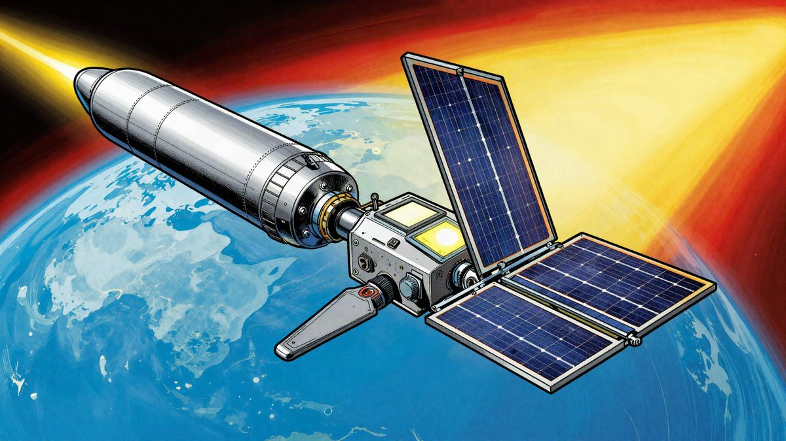
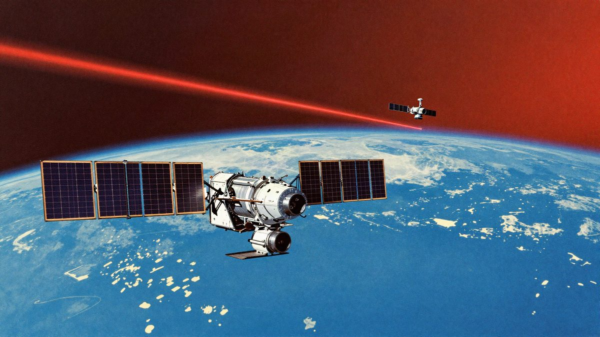

Musk: SpaceX i Nvidia šalju Vera Rubin NVL72 u orbitu, prvi StarMind uređaji 2027.

Elon Musk je na Barron'sovoj investorskoj konferenciji u New Yorku rekao da SpaceX i Nvidia razvijaju StarMind, uređaje za računanje u svemiru temeljene na platformi Vera Rubin NVL72. Prvo lansiranje planirano je za treće tromjesečje 2027., a masovna primjena za 2028. i 2029. Hlađenje, otpornost na zračenje i održavanje u orbiti još nisu riješeni.
Elon Musk je na 33. Barron's investor konferenciji u New Yorku rekao da SpaceX i Nvidia zajedno razvijaju prve StarMind uređaje za računanje u svemiru. Prema njegovim riječima, prvi bi se u orbitu trebali lansirati u trećem tromjesečju 2027., a masovna primjena slijedi 2028. i 2029.
U jezgri projekta nije uobičajeni server, nego Nvidijina platforma Vera Rubin NVL72. To je sustav na razini racka, koji se inače koristi za treniranje AI modela na Zemlji. Zato izgleda da SpaceX svoje svemirske data centre od početka planira za veliki AI inference i training, a ne samo za jednostavnu obradu podataka u orbiti.
Zašto u svemir
Glavni razlog je energija. Musk tvrdi da je krajnje ograničenje AI računanja struja i da zemaljske mreže ne mogu pratiti potrebe data centara. Kao primjer je rekao da Kina proizvodi oko tri puta više električne energije od SAD-a.
Solarni paneli u orbiti ne ovise o danu i noći ni o oblacima, pa prema procjeni dobivaju oko 30 posto više sunčeve energije nego na tlu. Na tome se, navodno, temelji dugoročna troškovna konkurentnost svemirskih data centara.
Veze između satelita
SpaceX istodobno nadograđuje komunikaciju. Za sljedeću generaciju Starlink V4 satelita planira 10 laserskih linkova, svaki brži od 10 Tbit/s. Dugoročno je zamišljena mreža od više od 100.000 satelita, svaki s oko 100 laserskih linkova.
Svjetlost se kroz vakuum širi oko 40 posto brže nego kroz optičko vlakno i može ići izravnijim putem. Zato bi veze između svemirskih data centara imale drukčiju fizičku osnovu od podmorskih kabela.
Otvoreni inženjerski problemi
Vremenski plan je zasad samo na papiru. Hlađenje, otpornost na zračenje i održavanje u orbiti i dalje su neriješeni inženjerski izazovi. Prva velika prepreka bit će hoće li Nvidijini chipovi stabilno raditi u orbitalnim uvjetima.
Izvor: MyDrivers (快科技)
Povezani članci
 Musk: Tesla Optimus će se najvjerojatnije samo iznajmljivati, a ne prodavati7. studenoga 2026.
Musk: Tesla Optimus će se najvjerojatnije samo iznajmljivati, a ne prodavati7. studenoga 2026.- Musk: Tesla planira "školu" za oko 10.000 Optimus robota, a Terafab prve testne chipove u svibnju i lipnju22. listopada 2026.

Musk: Starlink V4 imat će oko 100 laserskih veza po satelitu, svaka preko 10 Tbit/s8. studenoga 2026.